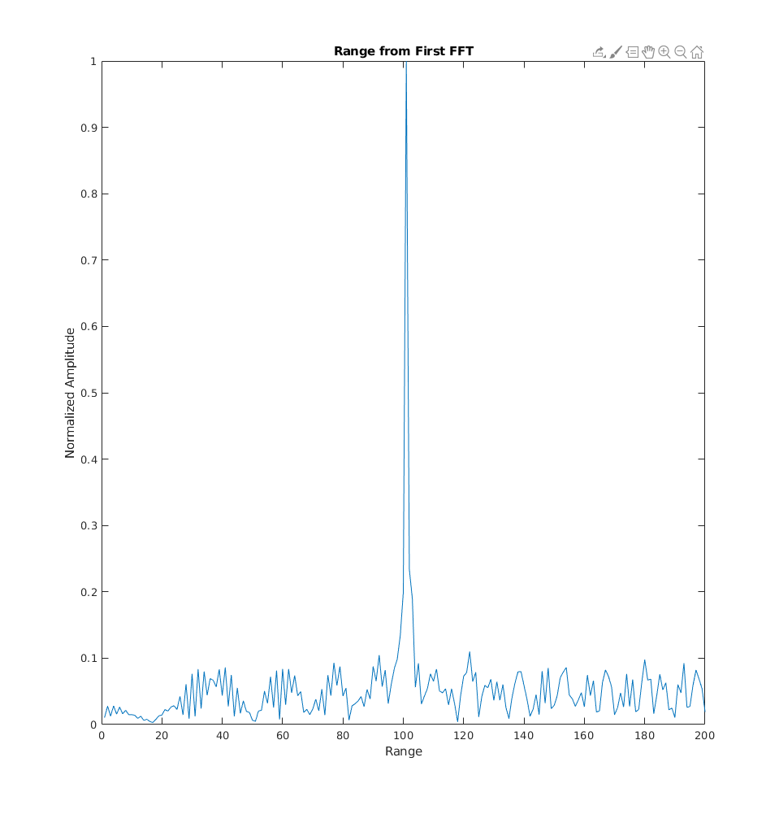
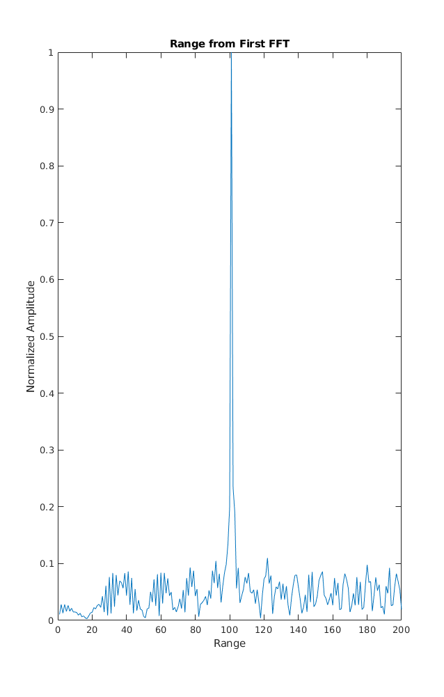
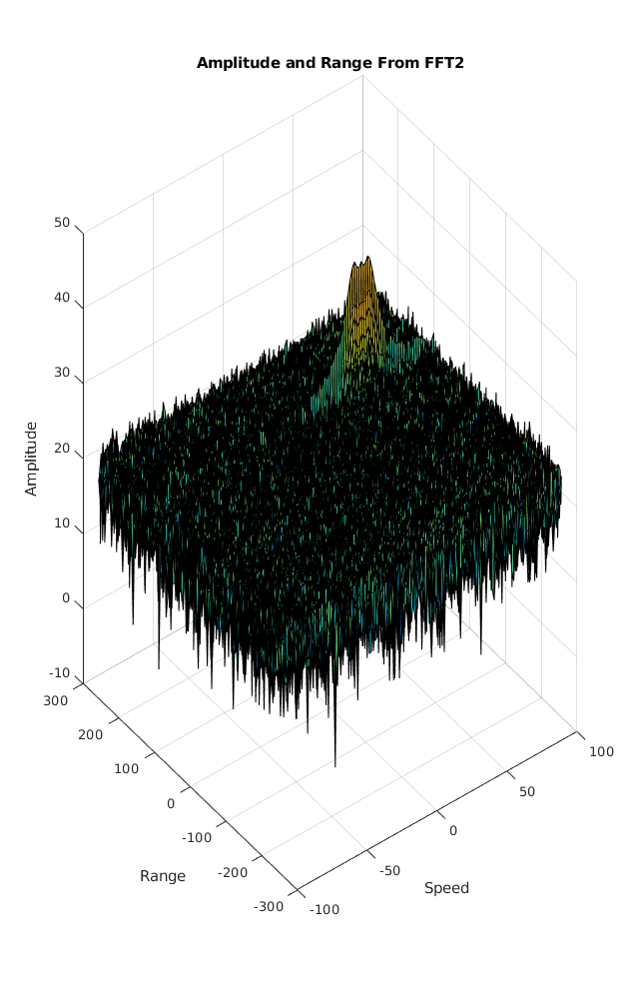
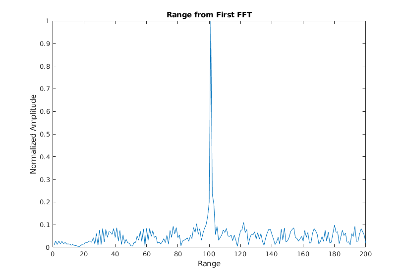
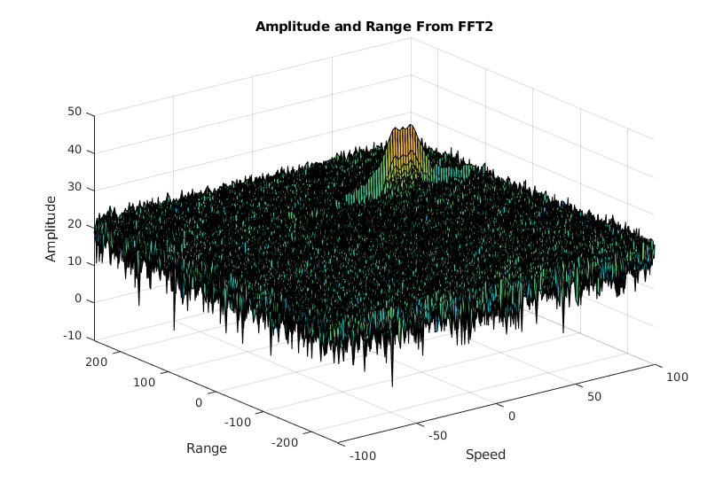
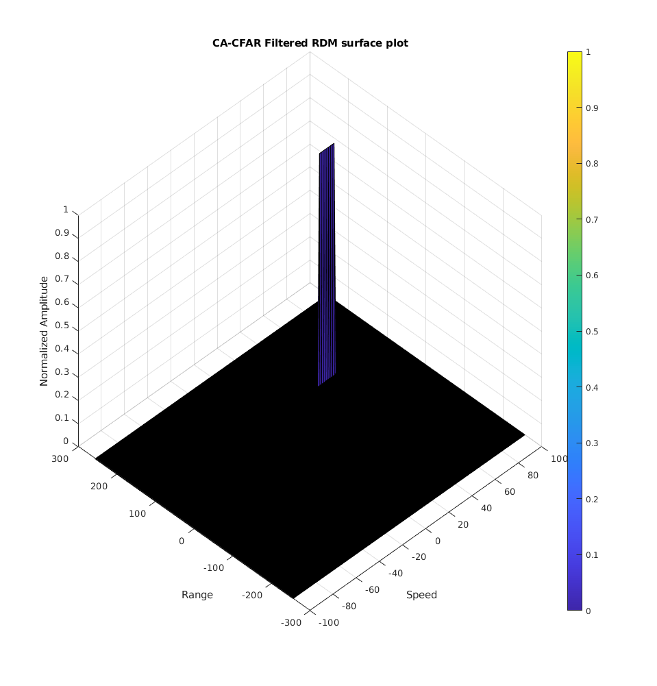

Contents
clear all;
clc;
Radar Specifications
%%%%%%%%%%%%%%%%%%%%%%%%%%% % Frequency of operation = 77GHz % Max Range = 200m % Range Resolution = 1 m % Max Velocity = 100 m/s %%%%%%%%%%%%%%%%%%%%%%%%%%%
User Defined Range and Velocity of target
%TODO : define the target's initial position and velocity. Note : Velocity remains contant
target_range = 100; target_velocity = 50; radar_max_range = 200; radar_range_resolution = 1; radar_max_velocity = 100; speed_of_light = 3e8;
FMCW Waveform Generation
% *%TODO* : %Design the FMCW waveform by giving the specs of each of its parameters. % Calculate the Bandwidth (B), Chirp Time (Tchirp) and slope (slope) of the FMCW % chirp using the requirements above. %Operating carrier frequency of Radar fc = 77e9; %carrier freq Hz B = speed_of_light /(2 * radar_range_resolution); % The sweep time can be computed based on the time needed for the signal to travel the unambiguous % maximum range. In general, for an FMCW radar system, the sweep time should be at least % 5 to 6 times the round trip time. This example uses a factor of 5.5. t_sweep = 5.5; t_chirp = t_sweep * 2 * (radar_max_range/speed_of_light); slope = B / t_chirp; %The number of chirps in one sequence. Its ideal to have 2^ value for the ease of running the FFT %for Doppler Estimation. Nd = 128; % #of doppler cells OR #of sent periods % number of chirps %The number of samples on each chirp. Nr = 1024; %for length of time OR # of range cells % Timestamp for running the displacement scenario for every sample on each % chirp t = linspace(0,Nd*t_chirp,Nr*Nd); %total time for samples %Creating the vectors for Tx, Rx and Mix based on the total samples input. Tx = zeros(1, length(t)); %transmitted signal Rx = zeros(1, length(t)); %received signal Mix = zeros(1, length(t)); %beat signal %Similar vectors for range_covered and time delay. r_t = zeros(1, length(t)); td = zeros(1, length(t));
Signal generation and Moving Target simulation
Running the radar scenario over the time.
for i = 1 : length(t) % *%TODO* : %For each time stamp update the Range of the Target for constant velocity. r_t(i) = target_range + (target_velocity*t(i)); td(i) = (2 * r_t(i)) / speed_of_light; % *%TODO* : %For each time sample we need update the transmitted and %received signal. Tx(i) = cos(2 * pi * (fc * t(i) + 0.5 * slope * t(i)^2)); Rx(i) = cos(2 * pi * (fc * (t(i) - td(i)) + 0.5 * slope * (t(i) - td(i))^2)); % *%TODO* : %Now by mixing the train_cellsansmit and Receive generate the beat signal %This is done by element wise matrix multiplication of train_cellsansmit and %Receiver Signal Mix(i) = Tx(i) .* Rx(i); end
RANGE MEASUREMENT
%TODO :
%reshape the vector into Nr*Nd array. Nr and Nd here would also define the size of %Range and Doppler FFT respectively. Mix = reshape(Mix, [Nr, Nd]); % *%TODO* : %run the FFT on the beat signal along the range bins dimension (Nr) and %normalize. sig_fft = fft(Mix, Nr); % *%TODO* : % Take the absolute value of FFT output sig_fft = abs(sig_fft); sig_fft = sig_fft ./ max(sig_fft); % Normalize % *%TODO* : % Output of FFT is double sided signal, but we are interested in only one side of the spectrum. % Hence we throw out half of the samples. sig_fft = sig_fft(1 : Nr/2-1); %plotting the range %figure ('Name','Range from First FFT') % *%TODO* : % plot FFT output plot(sig_fft); axis ([0 200 0 1]); title('Range from First FFT'); ylabel('Normalized Amplitude'); xlabel('Range');
RANGE DOPPLER RESPONSE
The 2D FFT implementation is already provided here. This will run a 2DFFT on the mixed signal (beat signal) output and generate a range doppler map.You will implement CFAR on the generated RDM
% Range Doppler Map Generation. % The output of the 2D FFT is an image that has reponse in the range and % doppler FFT bins. So, it is important to convert the axis from bin sizes % to range and doppler based on their Max values. Mix = reshape(Mix, [Nr, Nd]); % 2D FFT using the FFT size for both dimensions. sig_fft2 = fft2(Mix, Nr, Nd); % Taking just one side of signal from Range dimension. sig_fft2 = sig_fft2(1 : Nr/2, 1 : Nd); sig_fft2 = fftshift(sig_fft2); range_doppler_map = abs(sig_fft2); range_doppler_map = 10 * log10(range_doppler_map); %use the surf function to plot the output of 2DFFT and to show axis in both %dimensions doppler_axis = linspace(-100, 100, Nd); range_axis = linspace(-200, 200, Nr/2) * ((Nr/2) / 400); % Additional views of the surface plot figure ('Name', 'Amplitude and Range From FFT2'); surf(doppler_axis, range_axis, range_doppler_map); title('Amplitude and Range From FFT2'); xlabel('Speed'); ylabel('Range'); zlabel('Amplitude'); 
CFAR implementation
%Slide Window through the complete Range Doppler Map % *%TODO* : %Select the number of train_cellsaining Cells in both the dimensions. train_cells = 10; train_band = 8; % *%TODO* : %Select the number of Guard Cells in both dimensions around the Cell under %test (CUT) for accurate estimation guard_cells = 4; guard_band = 4; % *%TODO* : % offset the threshold by SNR value in dB offset = 1.4; % *%TODO* : %design a loop such that it slides the CUT across range doppler map by %giving margins at the edges for train_cellsaining and Guard Cells. %For every iteration sum the signal level within all the training %cells. To sum convert the value from logarithmic to linear using db2pow %function. Average the summed values for all of the training %cells used. After averaging convert it back to logarithimic using pow2db. %Further add the offset to it to determine the threshold. Next, compare the %signal under CUT with this threshold. If the CUT level > threshold assign %it a value of 1, else equate it to 0. % Use RDM[x,y] as the matrix from the output of 2D FFT for implementing % CFAR range_doppler_map = range_doppler_map / max(range_doppler_map(:)); for row1 = train_cells + guard_cells + 1 : (Nr/2) - (train_cells + guard_cells) for col1 = train_band + guard_band + 1 : (Nd) - (train_band + guard_band) %Create a vector to store noise_level for each iteration on training cells noise_level = zeros(1, 1); for row2 = row1 - (train_cells + guard_cells) : row1 + (train_cells + guard_cells) for col2 = col1 - (train_band + guard_band) : col1 + (train_band + guard_band) if (abs(row1 - row2) > guard_cells || abs(col1 - col2) > guard_band) noise_level = noise_level + db2pow(range_doppler_map(row2, col2)); end end end % Calculate threshold from noise average then add the offset threshold = pow2db(noise_level / (2 * (train_band + guard_band + 1) * 2 * (train_cells + guard_cells + 1) - (guard_cells * guard_band) - 1)); threshold = threshold + offset; cell_under_test = range_doppler_map(row1,col1); if (cell_under_test < threshold) range_doppler_map(row1, col1) = 0; else range_doppler_map(row1, col1) = 1; end end end % *%TODO* : % The process above will generate a thresholded block, which is smaller %than the Range Doppler Map as the CUT cannot be located at the edges of %matrix. Hence,few cells will not be thresholded. To keep the map size same % set those values to 0. range_doppler_map(range_doppler_map~=0 & range_doppler_map~=1) = 0; % *%TODO* : %display the CFAR output using the Surf function like we did for Range %Doppler Response output. figure('Name', 'CA-CFAR Filtered RDM') surf(doppler_axis, range_axis, range_doppler_map); colorbar; title( 'CA-CFAR Filtered RDM surface plot'); xlabel('Speed'); ylabel('Range'); zlabel('Normalized Amplitude'); view(315, 45);  